What is ไนกี้ โกลดัง?
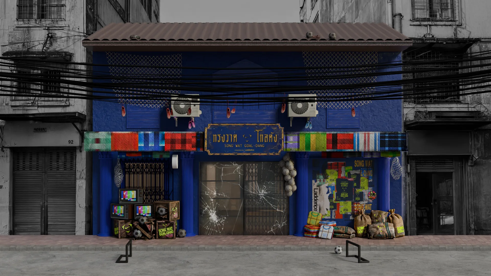
Nike GO-DANG reimagines the warehouse as a cultural playground - where the energy of Song Wat meets the spirit of football. Inspired by the workers, traders, and fans who shape the neighborhood, it blends Thai heritage, street style, and football culture into a shared experience of movement, creativity, and community.
A tribute to the people of Song Wat. A celebration of football beyond the pitch.
Why “Goal-dang”?
Football culture doesn’t only live in stadiums. It lives in the everyday routines of the people who wear jerseys to work, stay up all night to watch matches, and carry their passion for the game into their daily lives.
Song Wat has always been a place of movement - goods, people, and ideas passing through its warehouses and trading houses. Today, that same spirit can be found in football culture: communities connected by shared rituals, hard work, and identity.
GO-DANG brings these two worlds together. By transforming the warehouse into a cultural stage, Nike celebrates the people behind the game and the neighborhood that continues to move Bangkok forward.
The location
Set inside the historic warehouse district of Song Wat, Nike GO-DANG takes over the iconic PLAY art house - a creative space surrounded by galleries, cafes, traders, and the people who continue to shape the neighborhood’s culture.
Just minutes from MRT Wat Mangkon and Ratchawong Pier, the venue is easily accessible while remaining deeply connected to the spirit of Song Wat: a place built on movement, exchange, and community. Address: 993 Song Wat Road, Samphanthawong, Bangkok 10100
Getting There
- MRT Blue Line: Wat Mangkon Station (Exit 1), approximately 5-10 minutes on foot
- Chao Phraya Express Boat: Ratchawong Pier, approximately 5 minutes on foot
- Taxi / Grab: Search "PLAY Art House Song Wat"
- Parking is available in nearby Song Wat and Yaowarat parking areas.
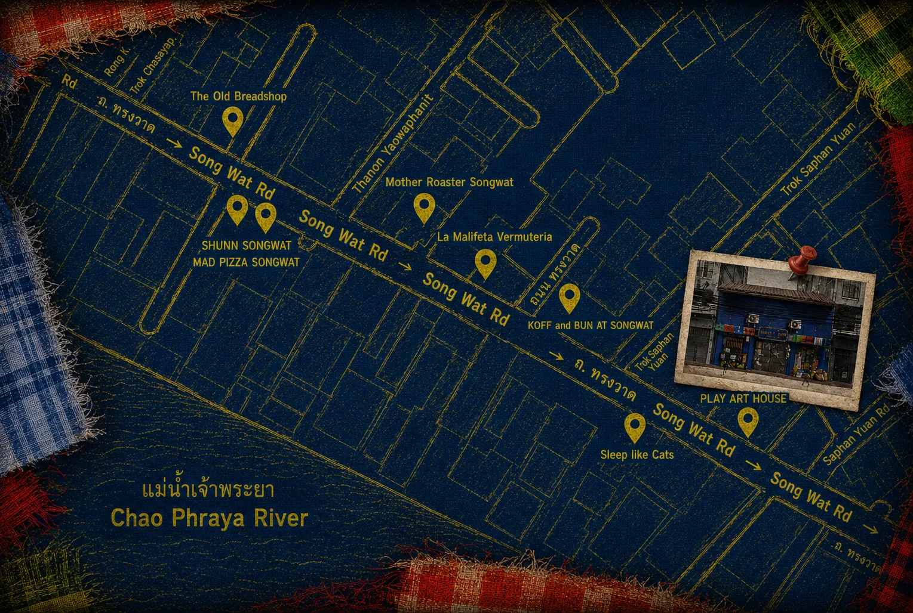
What’s inside?
Copper Renew · โลหะหมุนเวียน
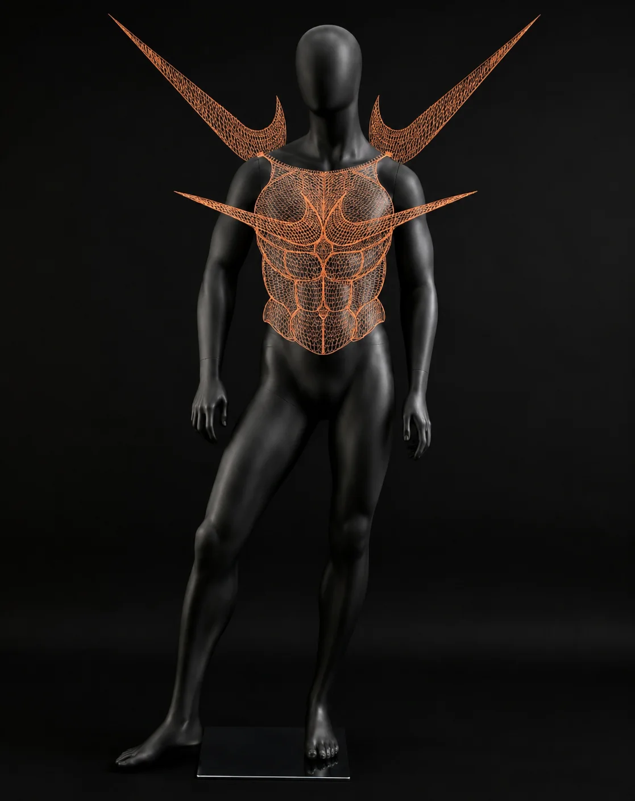
Scrap copper — stripped wire, motor windings, pipe — hand-woven and coiled into a winged chest-and-abdomen armor bearing the Swoosh, channelling the Winged Victory of Samothrace.
A circular-economy manifesto: victory isn’t found in new resources, but in seeing worth in what’s been thrown away — proof that even scrap can fight, and be reborn as something beautiful and strong.
Ladderice
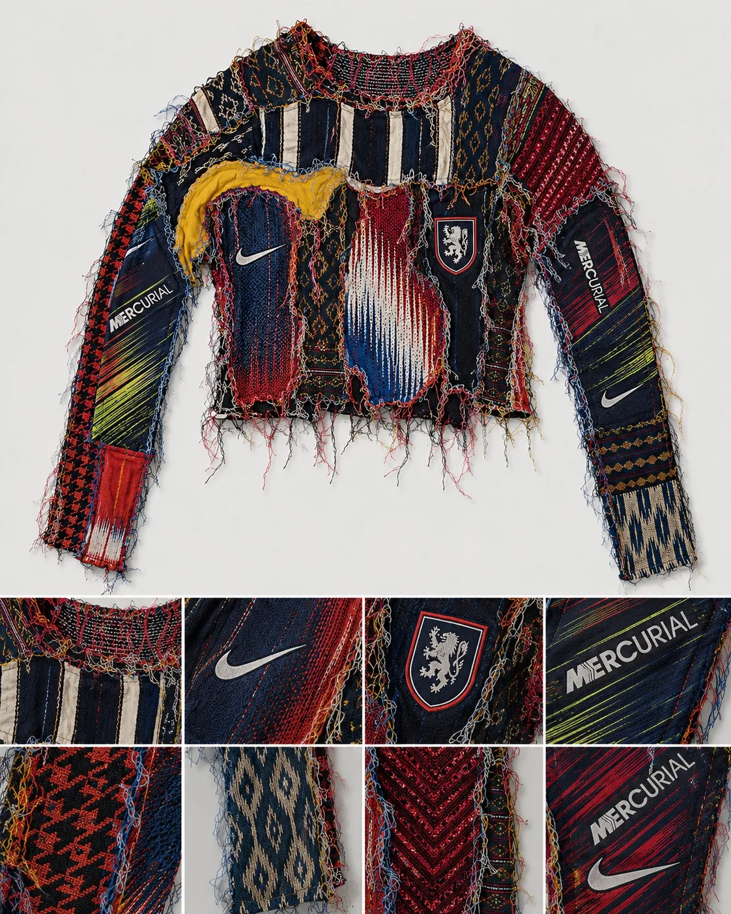
A speed suit — biker leathers reimagined — pieced from shredded Nike boots across the eras (OG Mercurial through the 2022 Hypervenom) and stitched with world-renowned Thai silk.
Every World Cup Thailand misses, another Nike innovation is piled on: heavy to look at, yet light to wear — the nation’s dream carried toward 2030. Break the curse, and there shall be consequences.
Jersey customization
Drop in and make a football jersey your own — heat-transfer prints of Thai graffiti, names, numbers and motifs laid over iconic national kits. A look at the sample designs from the Song Wat Goal-dang studio:
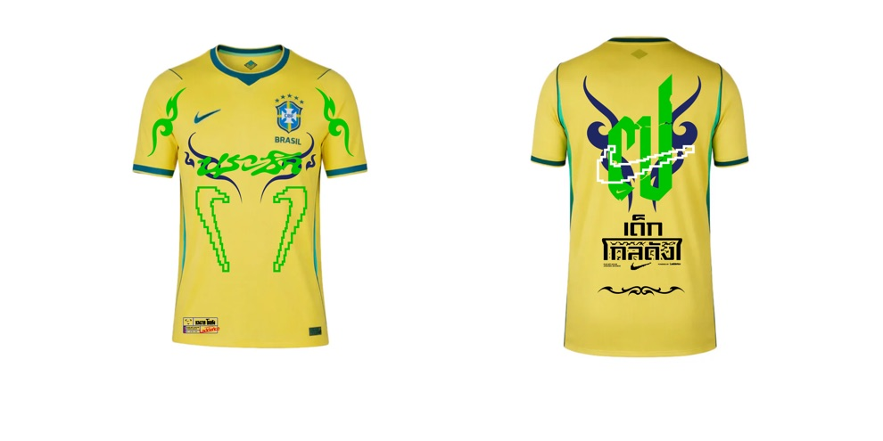
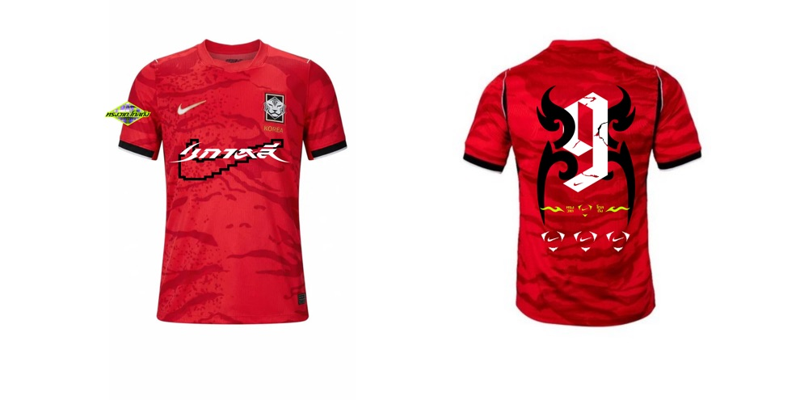
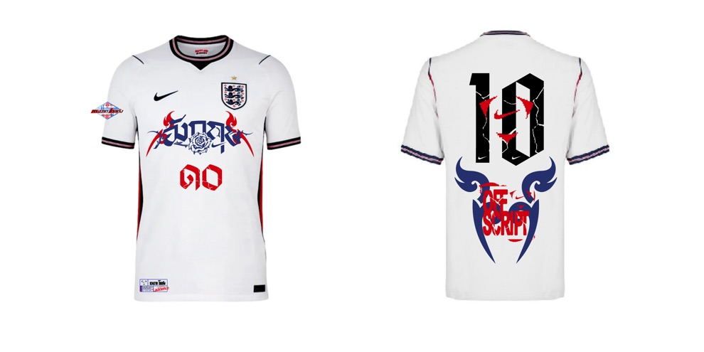
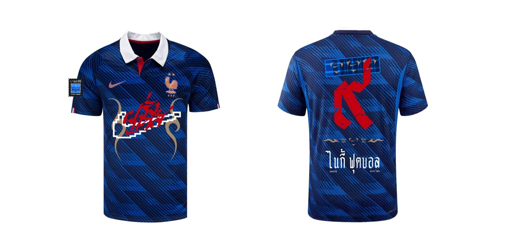
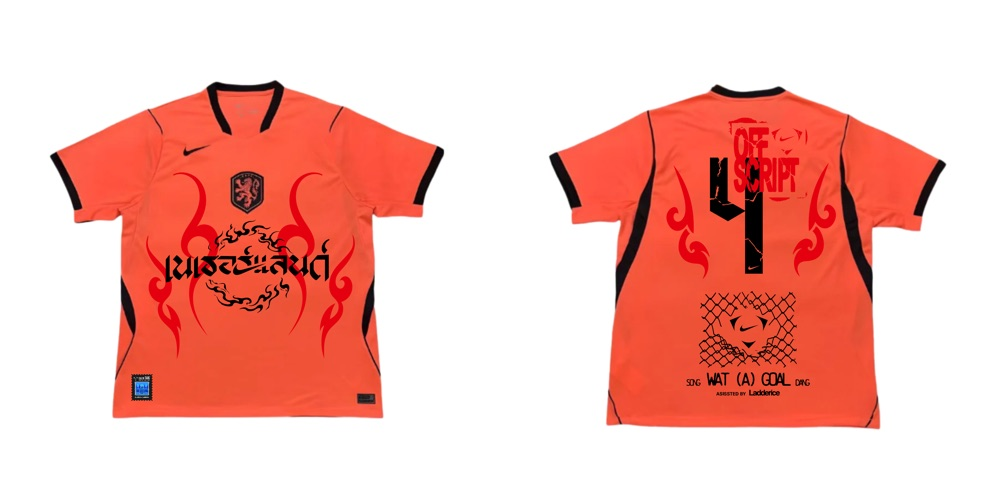
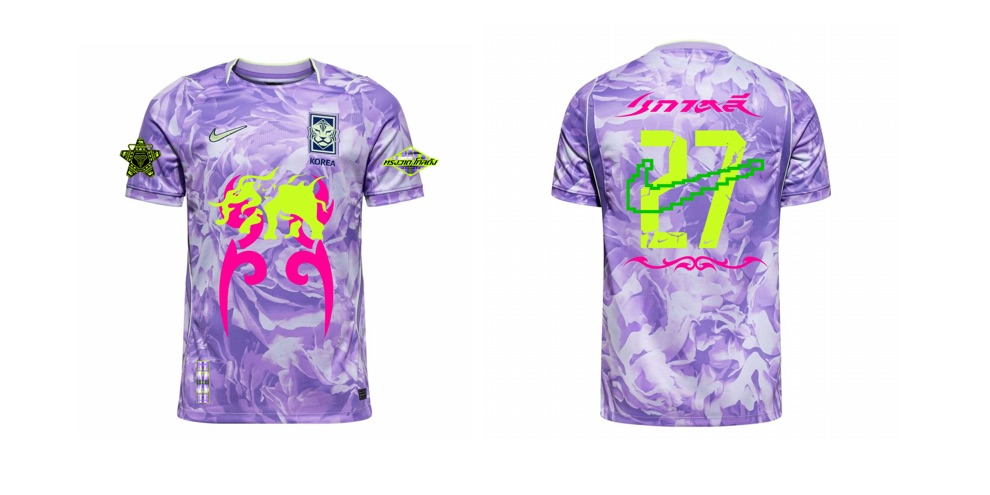
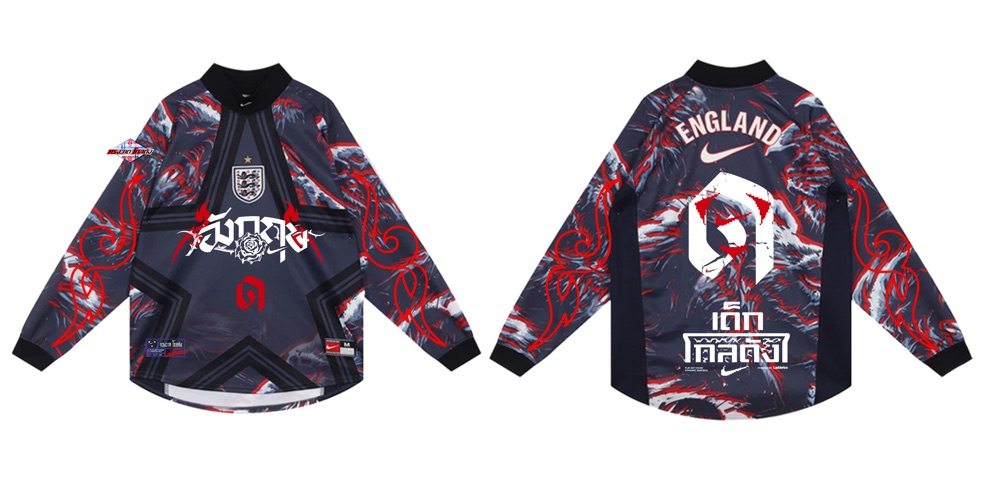
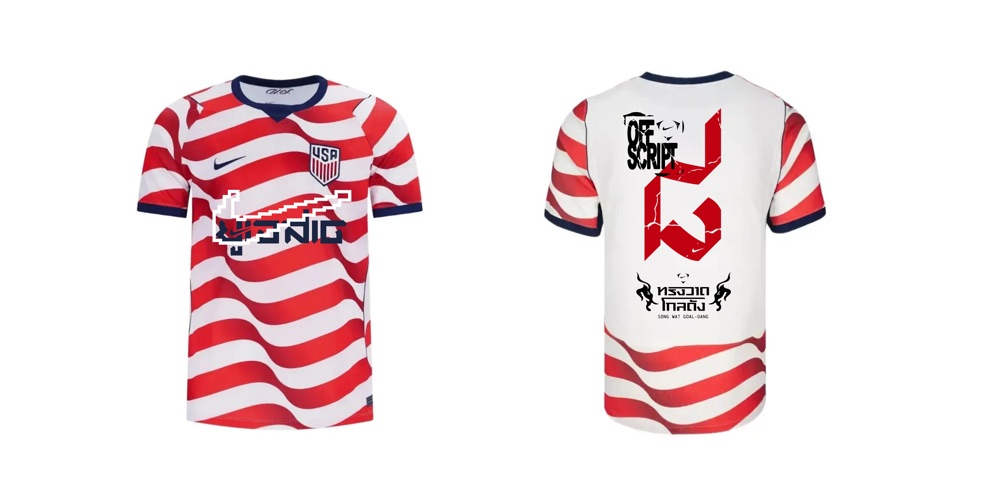
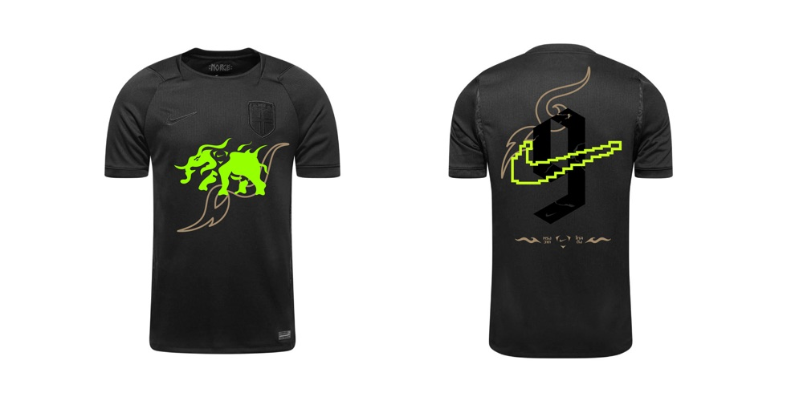
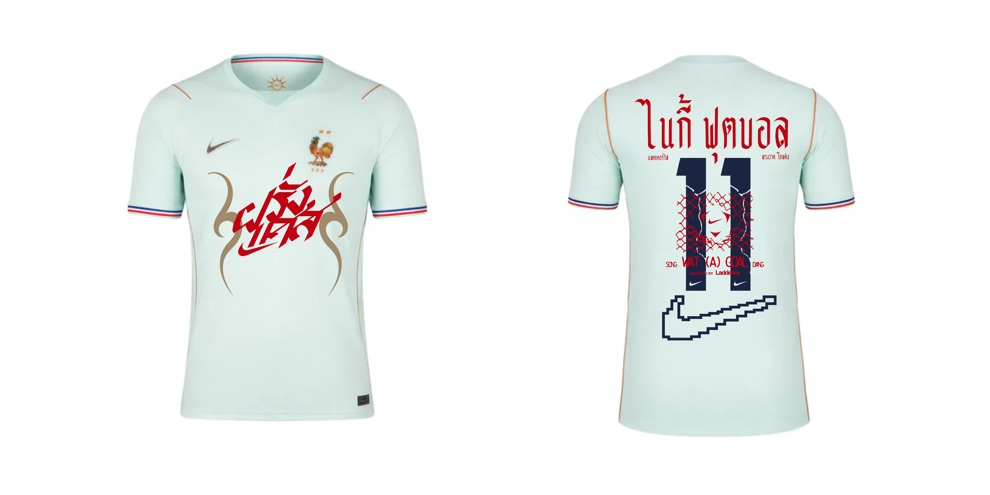
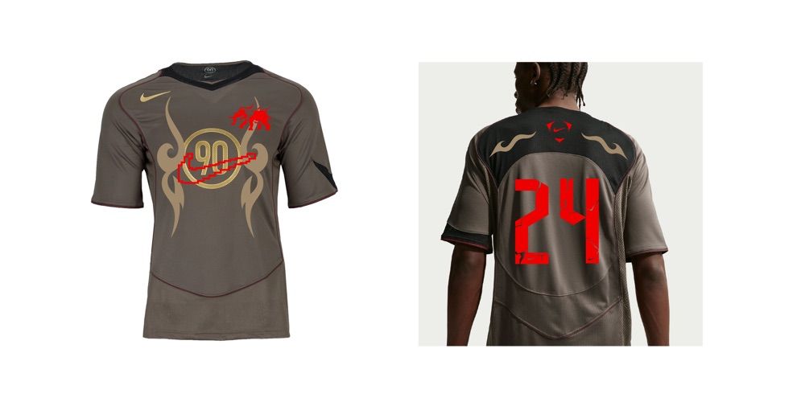
Special workshops
Limited-seat sessions led by guest artists. Registration opens 30 min before each session.
-
Blueprint CyanotypeLaddericeFri Jun 12 · 19:30–20:30Tue Jun 16 · 19:30–20:30Fri Jun 19 · 19:30–20:30Image — Blueprint Cyanotypereplace with photo
-
Off-Script ThaipographyMaanSat Jun 13 · 10:00–11:00Mon Jun 15 · 18:00–19:00Thu Jun 18 · 19:30–20:30Image — Off-Script Thaipographyreplace with photo
-
Off-Script Copper WeavingTeerapolSun Jun 14 · 10:00–11:00Wed Jun 17 · 19:30–20:30Sat Jun 20 · 10:00–11:00
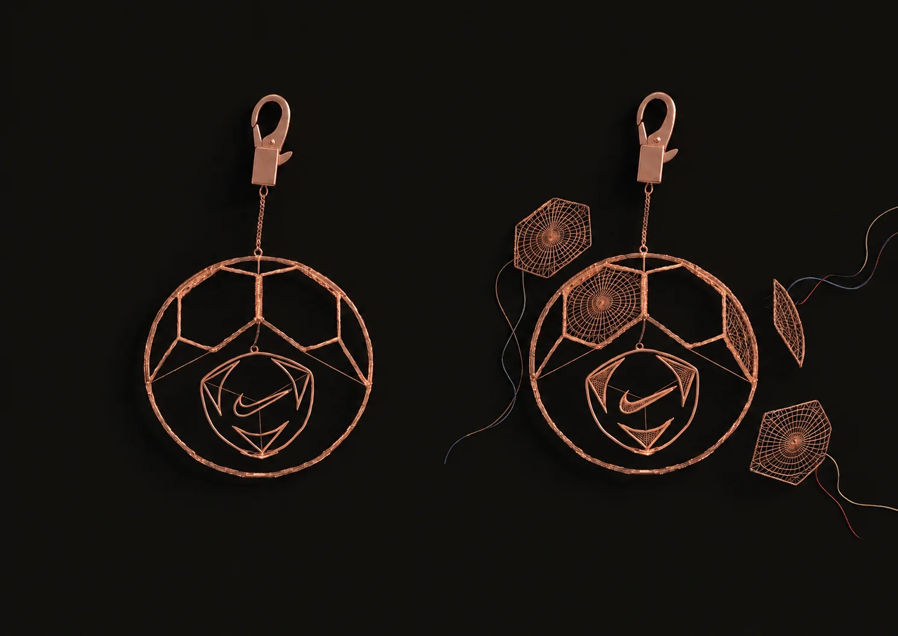
Base structure provided · modular knitted parts you make & add